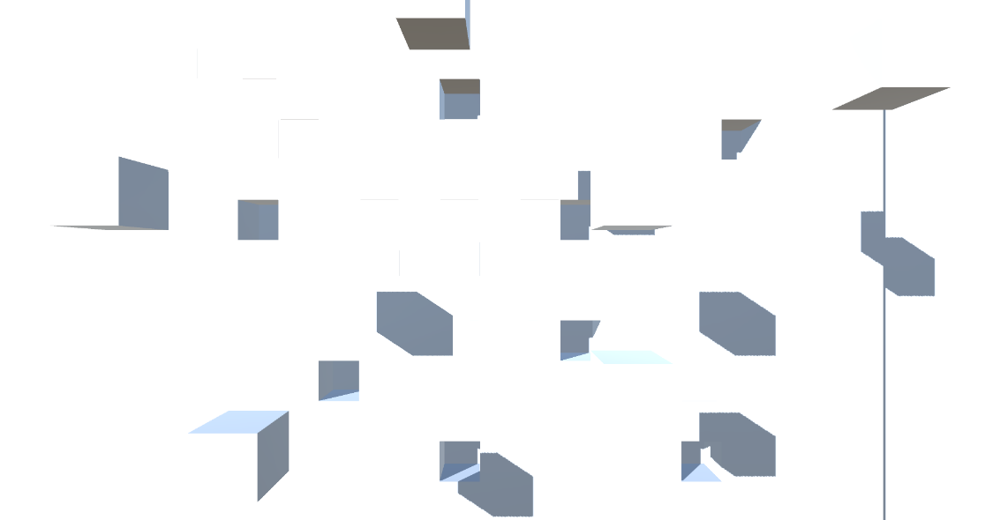
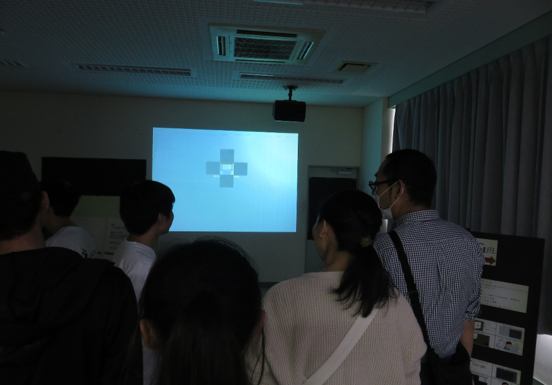

メインページへ戻る
Unity
Unityを使用してアニメーションを製作し、壁に投影した作品
高校の文化祭で展示し、来場者に多くの評価をいただいた

試行錯誤中の画像
壁の一部が飛び出てくるというアニメーションを製作している
この場合、正面から見ても何が起きているのかが分かりづらい
解決策として、色のついた照明を斜め方向から当てることで壁のどの部分が飛び出してきているのかを分かりやすくした

高校の文化祭での様子
完成品を展示している様子
飛び出してくる動画に効果音をつけることでさらに完成度が高まった。
メインページへ戻る